The plot_field function#
We will explore the functionality of the plot_field function, which is a part of the util package of mumaxplus.
We will cover
layers and axes
inspecting components
arrows
color bars
scalar and tensor fields
numpy arrays
further customization and bookkeeping
We will use standard problem 3 as a basis. The problem specification can be found on the µMAG website.
import numpy as np
import matplotlib.pyplot as plt
from mumaxplus import Ferromagnet, Grid, World
from mumaxplus.util.config import vortex
from mumaxplus.util.formulary import exchange_length, magnetostatic_energy_density
msat = 800e3
aex = 13e-12
alpha = 0.02
ku1 = 0.1 * magnetostatic_energy_density(msat)
anisU = (1, 0, 0)
# close to cube size where vortex and flower states have equal energy
length_in_lex = 8.46 # in unit of exchange length
lex = exchange_length(aex, msat)
length = length_in_lex * lex
N = 32
world = World(cellsize=(length / N, length / N, length / N))
magnet = Ferromagnet(world, Grid((N, N, N)))
magnet.msat = msat
magnet.aex = aex
magnet.ku1 = ku1
magnet.anisU = anisU
magnet.magnetization = (1, 0, 0.01) # flower
# magnet.magnetization = vortex(magnet.center, length / 12, -1, 1) # vortex
magnet.minimize()
# make magnetization a shorter variable
mag = magnet.magnetization
Layers and axes#
Let’s call plot_field on the magnetization of the magnet.
from mumaxplus.util.show import plot_field
plot_field(mag)
{kind=link}
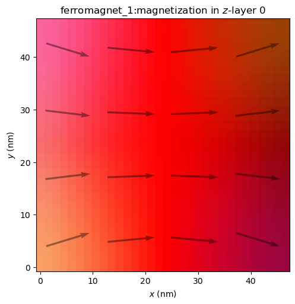
As explained by the title, this displays the magnetization in z-layer number 0, so the bottom layer, with the z-axis as the out-of-plane axis. We can also look at a different layer.
plot_field(mag, layer=N-1)
{kind=link}
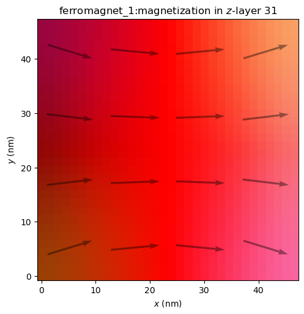
Or look along a different out-of-plane axis.
plot_field(mag, out_of_plane_axis="x")
plot_field(mag, out_of_plane_axis="y")
{kind=link}
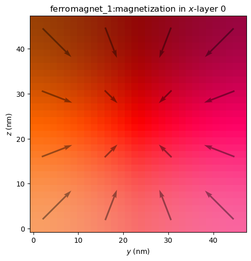
{kind=link}
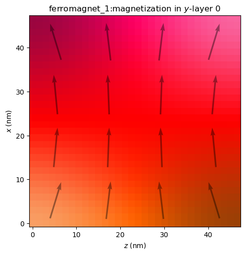
A few things to note:
The arrows always lie in the plotting plane and are scaled according to the magnitude of their projection in that plane.
The HSL color scheme is independent of the out-of-plane axis, where the x- and y-components always control the hue and saturation and the z-component controls lightness.
The axes make a right-handed coordinate system, hence x is plotted vertically and z horizontally with y as the out-of-plane axis.
Combining these on a single figure can be more convenient. We’ll make our own figure with multiple Axes, and pass each one to the ax argument.
fig, axs = plt.subplots(ncols=3, figsize=(15, 4.8))
for i, OoP_axis in enumerate("zyx"):
plot_field(mag, ax=axs[i], out_of_plane_axis=OoP_axis, layer=N//2)
fig.suptitle("Magnetization seen along different out-of-plane axes")
plt.show()
{kind=link}
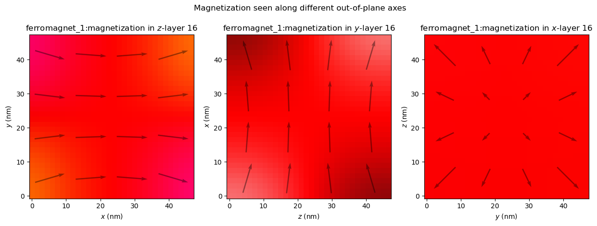
Inspecting components#
It can also be useful to look at an individual component.
fig, axs = plt.subplots(ncols=3, figsize=(15, 4.2))
for c in range(3):
plot_field(mag, ax=axs[c], component=c)
fig.suptitle("Different components of the magnetization.")
fig.tight_layout()
plt.show()
{kind=link}
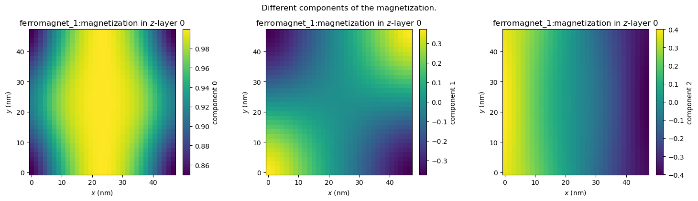
While this gives a clear overview, it could be useful to fix vmin and vmax to known values and perhaps change the colormap to a symmetric one like "PuOr". This can be done via the imshow_kwargs.
plot_field(mag, component=2, imshow_kwargs={"vmin": -1, "vmax": 1, "cmap": "PuOr"})
{kind=link}
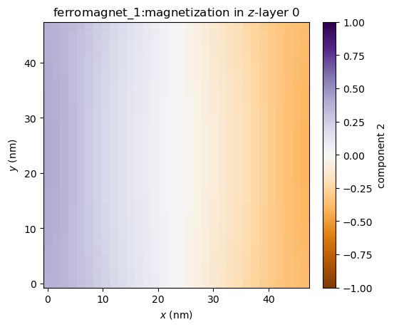
We may wish to keep the symmetric color limits, but let it figure out the limits itself. We can set imshow_symmetric_clim to True, without specifying vmin or vmax. We also don’t have to specify the colormap in this case (although we still can), because "bwr" will automatically be used.
plot_field(mag, component=2, imshow_symmetric_clim=True)
{kind=link}
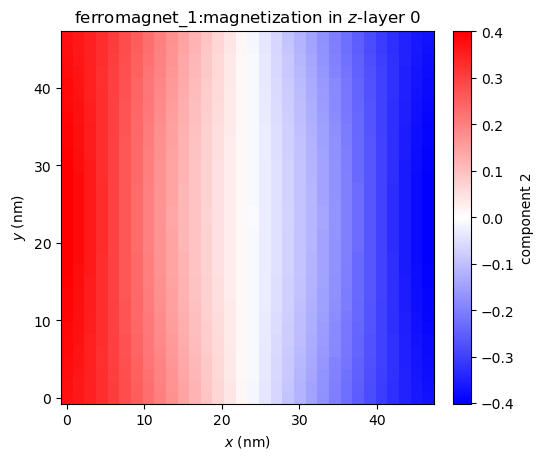
Inspecting all field components at once is a fairly common action, so inspect_field is a function that does just that. It has most of the same functionality as plot_field, except for drawing arrows. Via shared_colorbar, we can set the color bar of the different components to be shared too.
from mumaxplus.util.show import inspect_field
inspect_field(mag, shared_colorbar=True, symmetric_clim=True)
{kind=link}
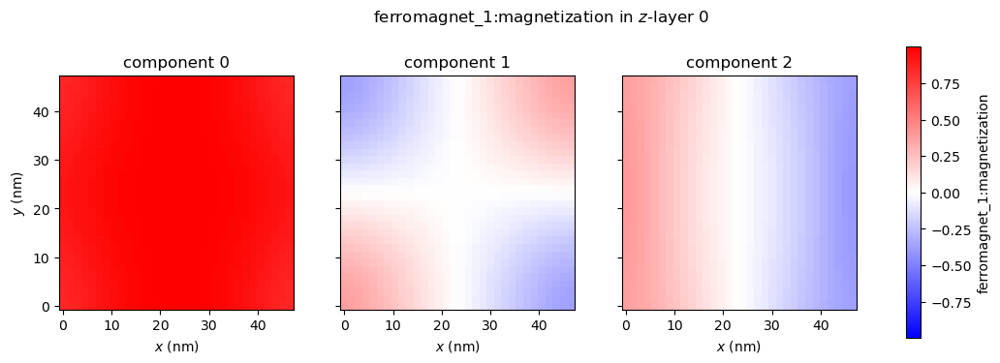
Arrows#
# Change the state to a vortex state to make it more interesting
magnet.magnetization = vortex(magnet.center, length / 12, -1, 1)
magnet.minimize()
We can change the size of the arrows (in number of cells). A smaller arrow_size yields more total arrows.
plot_field(mag, arrow_size=2)
{kind=link}
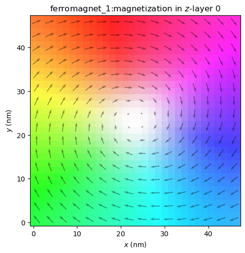
Or we can disable the arrows altogether.
plot_field(mag, enable_quiver=False)
{kind=link}
The arrows are automatically disabled when looking at only one component, but when plotting vector fields we can enable them again.
plot_field(mag, component=0, enable_quiver=True, arrow_size=2)
{kind=link}
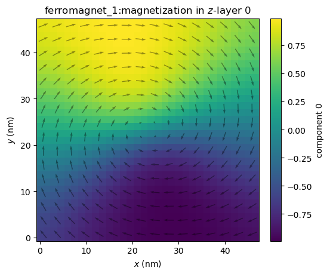
It might be hard to see, so we can change the color of the arrows, the alpha value, shape of the arrows, etc. via quiver_kwargs.
plot_field(mag, component=2, enable_quiver=True, arrow_size=2, quiver_kwargs={"color": "red", "alpha": 1.0})
{kind=link}
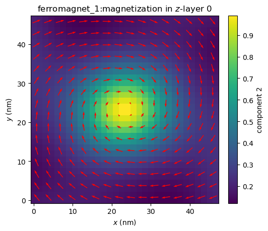
We can also color the arrows with the same HSL color scheme by setting quiver_cmap to "HSL".
plot_field(mag, component=2, enable_quiver=True, arrow_size=2, quiver_cmap="HSL")
{kind=link}
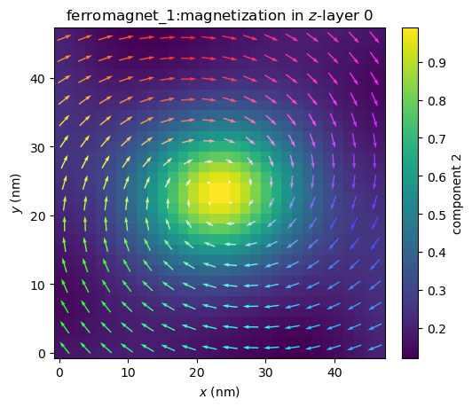
Or this can be set to any matplotlib colormap, which will show the out-of-plane component. Just like before, we can control symmetrization of the color limits with quiver_symmetric_clim.
ax = plot_field(mag, component=0, enable_quiver=True, arrow_size=2, quiver_cmap="Grays_r")
{kind=link}
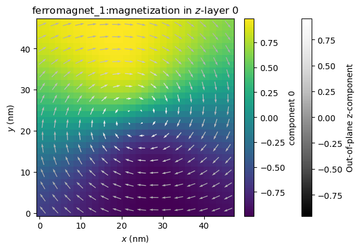
Color bars#
Like with the arrows, we can disable the color bar with enable_colorbar = False. We can also fully customize the color bar via colorbar_kwargs.
plot_field(mag, component=0, imshow_symmetric_clim=True, colorbar_kwargs={"ticks": [-0.5, 0, 0.5], "orientation" : "horizontal", "label": "$m_x$"})
{kind=link}
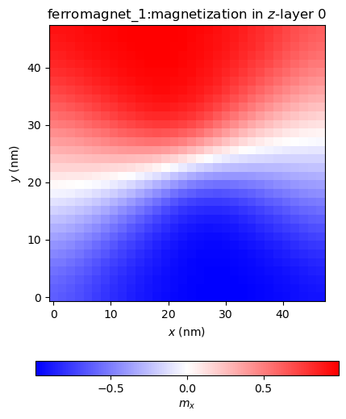
Scalar and tensor fields#
plot_field and inspect_field also work with fields with more or less than 3 components, although without the arrows.
# plotting all energy density components on one figure
fig, axs = plt.subplots(ncols=3, figsize=(12, 3.5))
fig.suptitle("Energy densities")
for i, E in enumerate([magnet.exchange_energy_density, magnet.anisotropy_energy_density, magnet.demag_energy_density]):
plot_field(E, ax=axs[i], layer=N//2)
fig.tight_layout()
plt.show()
{kind=link}
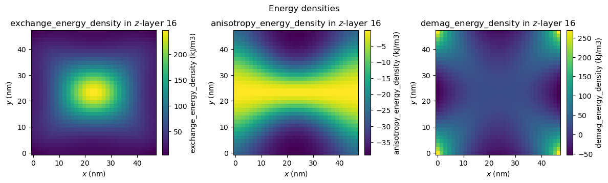
# parameters for illustrative purposes
magnet.conductivity = 2.5e6
magnet.amr_ratio = 0.02
inspect_field(magnet.conductivity_tensor);
{kind=link}
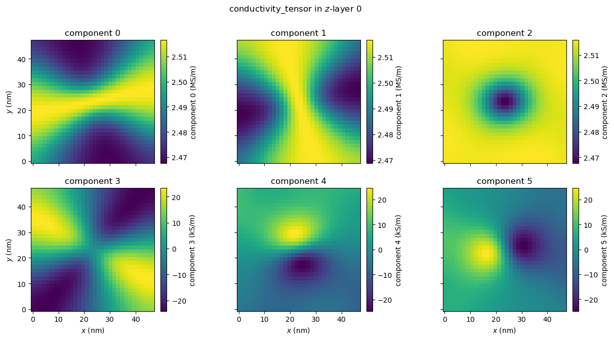
Numpy arrays#
We can’t only plot FieldQuantity instances of mumaxplus, but also numpy.ndarray s. This can be useful when working with custom calculations, saved fields or manipulated quantities. Just pass the array as the first argument. The only requirement is that it has the same shape as a FieldQuantity, meaning components first, then z, y and x indices.
magnet.magnetization = vortex(magnet.center, length / 12, -1, 1) # vortex
m_initial = magnet.magnetization.eval()
magnet.minimize()
m_minimized = magnet.magnetization.eval()
# our custom calculation
m_diff = m_minimized - m_initial
plot_field(m_diff, arrow_size=2, layer=N//2)
{kind=link}
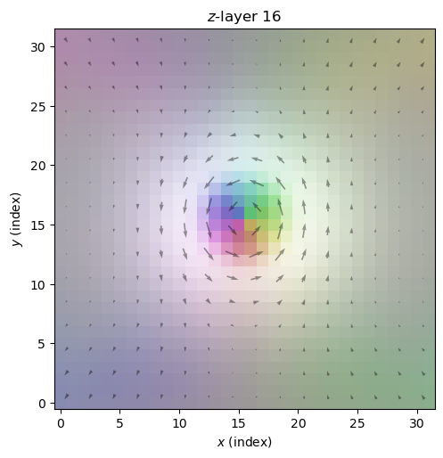
As you can see, we lose some information by using arrays. The plot_field function no longer has information about cell sizes, the name of the quantity, units, geometry, etc. We could customize the plot ourselves (see the last section), but we can also pass an appropriate quantity first and pass the field array we actually want to plot via the field argument.
This can also be used if you want to call plot_field multiple times on the same field without always reevaluating that field.
Let’s set the title to be more appropriate though.
plot_field(mag, field=m_diff, arrow_size=2, layer=N//2, title=f"Magnetization difference in $z$-layer {N//2}\nbetween initial and minimized states")
{kind=link}
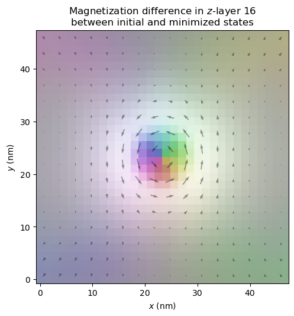
If you do want to set a geometry explicitly, you can do that via the geometry argument.
Further customization and bookkeeping#
Lastly, we can customize the plot by passing figsize, title, xlabel and ylabel, along with the various keyword argument dictionaries as seen before. We can pass ax to integrate the plot within our own, and plot_field returns the (created) Axes, so we can customize it further afterwards. If we do or do not want to show the figure when plotting, we can change the show argument. We can easily save it by passing a file_name.
from mumaxplus.util.constants import MU0
# make a magnet with exchange length and magnetostatic energy set to 1
# as specified in the original problem statement
cs = length_in_lex / N
rescaled_world = World((cs, cs, cs))
rescaled_magnet = Ferromagnet(rescaled_world, Grid((N, N, N)))
rescaled_magnet.msat = np.sqrt(2/MU0) # so Km = 1/2 µ0 Msat² = 1
rescaled_magnet.aex = 1.0 # so l_ex = sqrt(aex / Km) = 1
rescaled_magnet.ku1 = 0.1 # 0.1 * Km as specified
rescaled_magnet.anisU = (1, 0, 0)
rescaled_magnet.magnetization = vortex(rescaled_magnet.center, length_in_lex / 12, -1, 1) # vortex
rescaled_magnet.minimize()
ax = plot_field(rescaled_magnet.magnetization, layer=N//2, arrow_size=4,
xlabel=r"$x$ ($l_{\rm ex}$)", ylabel=r"$y$ ($l_{\rm ex}$)",
figsize=(3,3), title="Magnetization in\nrescaled magnet", show=False)
center = rescaled_magnet.center[0:2]
ax.scatter(*center)
ax.annotate("Center", center, np.array(center) + np.array([-2 * cs, 7 * cs]), arrowprops=dict(facecolor='black', shrink=0.05))
plt.show()
{kind=link}
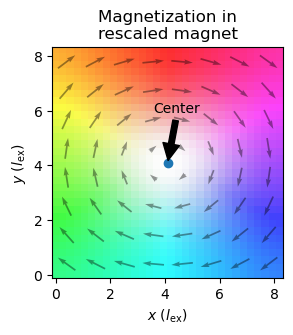